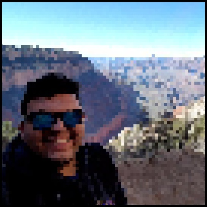

Name:
Eduardo "Eddy" Verde
Brief Blurb:
For this project, I tried to create a program that makes any image look like a retro 8-bit
pixelated image. I came up with this idea while playing Mario Kart with some friends.
I started the process by reading aboutDither. I eventually wrote Dither algorithm
but it came out as more static than pixelated. Therefore, with some influence of
Dither’s Algorithm I wrote a program that met most of my expectations. As you can
see in the images below I took the original selfie and made it pixelated.
Examples:
